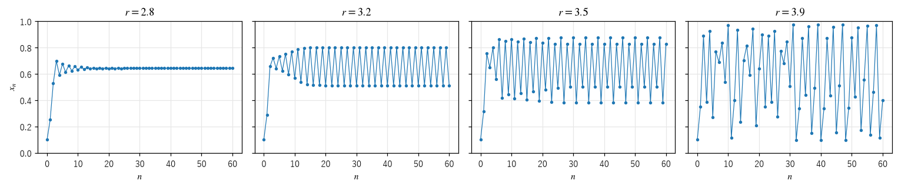
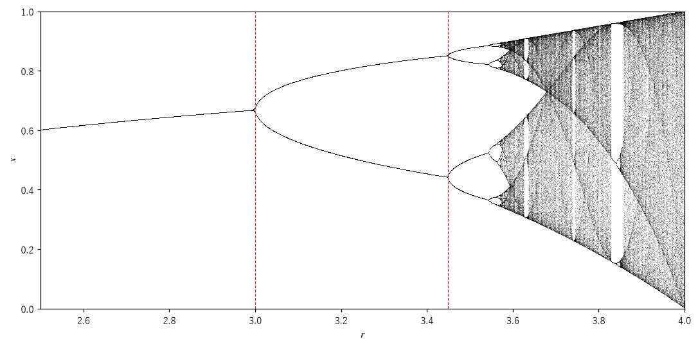
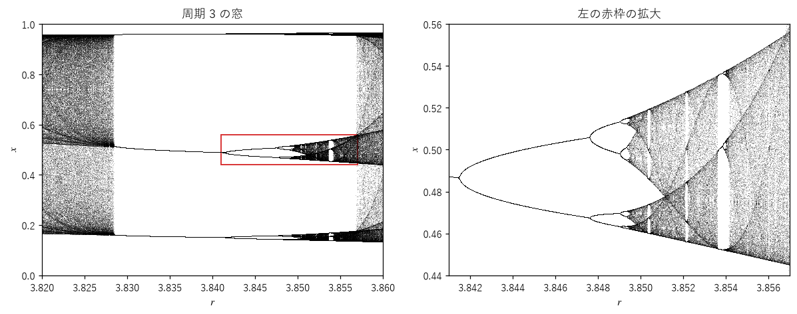
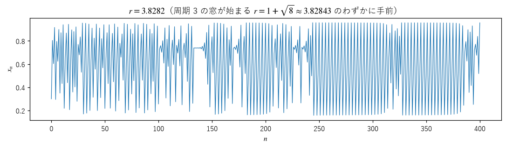
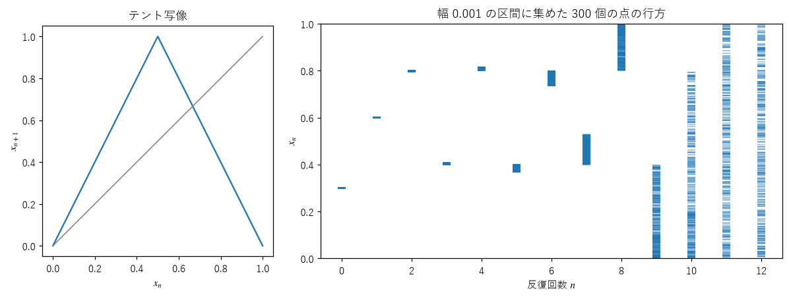
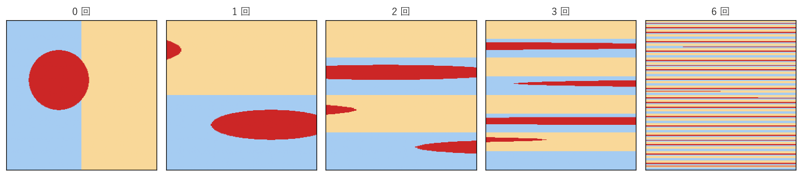

第 4 章 ロジスティック写像とカオスへの道
ロジスティック写像 \(f(x) = r x (1 - x)\) は、1976 年に生態学者のロバート・メイが論文「非常に複雑な振る舞いを示す単純な数学モデル」で紹介して以来、カオスの研究で最もよく使われる例になった。この章では、パラメータ \(r\) を少しずつ大きくしながら、固定点、周期軌道、カオスへと振る舞いが移り変わる様子を追う。
パラメータによる振る舞いの変化
図 13 は、4 つの \(r\) の値について、初期値 \(x_0 = 0.1\) からの時系列を描いたものである。


図 13 ロジスティック写像の時系列
\(r = 2.8\)：固定点 \(1 - 1/r \approx 0.643\) に落ち着く。
\(r = 3.2\)：2 つの値を交互にとる周期 2 の振動になる。
\(r = 3.5\)：4 つの値を順にとる周期 4 の振動になる。
\(r = 3.9\)：決まった周期を持たない、不規則な変動になる。
式の形はまったく同じで、係数 \(r\) が違うだけである。それでも、長期的な振る舞いは質的に異なる。パラメータを変えたときに、このように振る舞いが質的に変わることを分岐（bifurcation）という。
分岐図
\(r\) を連続的に変えたときの振る舞いを 1 枚の図にまとめたものが分岐図（bifurcation diagram）である。横軸に \(r\) をとり、各 \(r\) について、過渡状態を捨てた後の軌道の値 \(x_n\) を縦に点で打つ。固定点に落ち着く \(r\) では点が 1 つに重なり、周期 \(k\) の軌道では \(k\) 個の点が、カオスでは区間を埋める多数の点が打たれる。
次のコードは、1500 個の \(r\) の値について、軌道を NumPy の配列でまとめて計算する。各 \(r\) について、最初の 500 回の反復を捨て、続く 200 回の値を記録する。
27def bifurcation_points(r_min: float, r_max: float, n_r: int = 1500, transient: int = 500,
28 keep: int = 200) -> tuple[NDArray[np.float64], NDArray[np.float64]]:
29 """分岐図の点 (r, x) を返す.
30
31 n_r 個の r の値について、軌道をまとめて（ベクトル化して）計算する。最初の transient 回の
32 反復は、アトラクタに近づくまでの過渡状態として捨て、続く keep 回の値を記録する。
33 """
34 r = np.linspace(r_min, r_max, n_r)
35 x = np.full(n_r, 0.5)
36 for _ in range(transient):
37 x = r * x * (1.0 - x)
38 rs = np.empty((keep, n_r))
39 xs = np.empty((keep, n_r))
40 for i in range(keep):
41 x = r * x * (1.0 - x)
42 rs[i] = r
43 xs[i] = x
44 return rs.ravel(), xs.ravel()


図 14 ロジスティック写像の分岐図。赤い破線は \(r = 3\) と \(r = 1 + \sqrt{6} \approx 3.449\)。
図 14 で、\(r < 3\) では 1 本だった線が、\(r = 3\) で 2 本に分かれる。第 2 章で調べたとおり、ここで固定点が不安定になり、安定な周期 2 の軌道が生まれる。\(r = 1 + \sqrt{6}\) では、周期 2 の軌道が不安定になり、2 本の線がそれぞれ 2 本に分かれて周期 4 になる。このように、周期が 2 倍になる分岐を周期倍分岐（period-doubling bifurcation）という。
周期倍分岐は、\(r\) が大きくなるにつれて、周期 8、16、32、……と、間隔をどんどん縮めながら繰り返される。そして \(r_\infty \approx 3.5699\) で周期が無限大になり、その先の多くの \(r\) では軌道がカオス的になる。周期倍分岐を繰り返してカオスに至る道筋を周期倍分岐カスケード（period-doubling cascade）という。
ファイゲンバウム定数
周期倍分岐が起きる \(r\) の間隔は、ほぼ一定の比で縮んでいく。1975 年、ミッチェル・ファイゲンバウムは、この比が
に収束することを発見した（論文の発表は 1978 年）。この \(\delta\) をファイゲンバウム定数（Feigenbaum constant）という。
分岐点そのものを数値的に求めるのは難しいので、代わりに超安定なパラメータ \(R_n\) を使う。\(R_n\) は、周期 \(2^n\) の軌道が、微分が 0 になる点 \(x = 1/2\) を通る \(r\) の値である。軌道上の微分係数の積が 0 になるので、その軌道は超安定である（第 2 章）。\(R_n\) は分岐点の間に 1 つずつあり、その間隔も同じ比 \(\delta\) で縮む。\(R_n\) は、\(f^{2^n}(1/2) = 1/2\) を満たす \(r\) として、方程式の数値解法で求められる。
58def superstable_parameters(count: int) -> list[float]:
59 """周期 2^n の超安定な軌道を持つパラメータ R_0, R_1, ... を count 個求める.
60
61 超安定な軌道は、f の微分が 0 になる点 x = 1/2 を通る。そこで
62 f_r を 2^n 回適用した値が 1/2 に戻る r を、割線法で解く。初期値は、
63 それまでに求めた R から、間隔がほぼ一定の比で縮むことを使って予想する。
64 """
65 def g(r: float, n: int) -> float:
66 x = 0.5
67 for _ in range(2**n):
68 x = r * x * (1.0 - x)
69 return x - 0.5
70
71 params = [2.0, 1.0 + np.sqrt(5.0)]
72 while len(params) < count:
73 n = len(params)
74 guess = params[-1] + (params[-1] - params[-2]) / 4.7
75 r0, r1 = guess, guess + 1e-6 * (params[-1] - params[-2])
76 for _ in range(50):
77 g0, g1 = g(r0, n), g(r1, n)
78 if g1 == g0:
79 break
80 r0, r1 = r1, r1 - g1 * (r1 - r0) / (g1 - g0)
81 if abs(r1 - r0) < 1e-15:
82 break
83 params.append(float(r1))
84 return params[:count]
計算結果を次に示す。間隔の比 \(\delta_n = (R_{n-1} - R_{n-2})/(R_n - R_{n-1})\) が、4.669 に近づいていく様子が分かる。
n 周期 R_n δ_n
0 1 2.000000000000
1 2 3.236067977500
2 4 3.498561699328 4.708943
3 8 3.554640862769 4.680771
4 16 3.566667379856 4.662960
5 32 3.569243531637 4.668404
6 64 3.569795293750 4.668954
7 128 3.569913465422 4.669157
8 256 3.569938774233 4.669191
ファイゲンバウム定数の重要な点は、その普遍性（universality）にある。\(f(x) = r \sin(\pi x)\) のように、区間を区間に移し、なめらかな山を 1 つ持つ（頂上の近くが 2 次関数で近似できる）写像なら、式が違っても、周期倍分岐の間隔の比は同じ \(\delta\) になる。さらに、流体の対流や電気回路の実験でも、周期倍分岐を経てカオスに至る現象が観測され、分岐の間隔の比がファイゲンバウム定数に近い値になることが確かめられた。個々のモデルの細部によらず、同じ定数が現れることは、カオスへの道筋に普遍的な法則があることを示している。
カオスの領域と窓
\(r_\infty\) より先の分岐図は、点が帯状に広がったカオスの領域が大半を占める。しかし、ところどころに、点がまばらな縦の白い帯がある。この帯を窓（window）という。窓の中では、軌道は再び周期的になる。最も大きな窓は、\(r = 1 + \sqrt{8} \approx 3.8284\) から始まる周期 3 の窓である。


図 15 周期 3 の窓（左）と、その一部の拡大（右）
図 15 の左図で、周期 3 の窓の中の 3 本の線は、それぞれ周期倍分岐を起こし、周期 6、12、24、……を経て再びカオスになる。右図は、左図の赤枠を拡大したものである。この図は、図 14 の分岐図全体を縮小したものとよく似ている。分岐図は、全体と似た形を細部に何度も含んでいる。このように、全体と部分が似ている性質を自己相似性（self-similarity）といい、第 III 部で扱うフラクタルの最も基本的な特徴である。カオスを扱う章ですでにフラクタルが顔を出していることは、両者の深い結び付きを示している。
周期 3 の軌道には特別な意味がある。1975 年、リーとヨークは論文「周期 3 はカオスを意味する」で、区間からそれ自身への連続な写像が周期 3 の点を持てば、あらゆる周期の周期点を持ち、さらに周期的でない複雑な軌道も無数に持つことを示した。この論文は、「カオス」という言葉を数学の用語として使った最初の論文として知られる。
間欠性
窓の始まりの直前では、間欠性（intermittency）と呼ばれる振る舞いが見られる。図 16 は、周期 3 の窓が始まる \(r = 1 + \sqrt{8}\) よりわずかに小さい \(r = 3.8282\) の時系列である。


図 16 周期 3 の窓の直前での間欠性
周期 3 に近い規則的な振動（層流相）がしばらく続いた後、突然不規則な変動（バースト）が起き、また規則的な振動に戻る。\(r = 1 + \sqrt{8}\) では、\(f^3\) のグラフが対角線にちょうど接し、周期 3 の軌道が生まれる。その直前では、グラフと対角線の間にわずかな隙間があり、軌道はこの狭い隙間をゆっくりと通り抜ける。この通り抜けに時間がかかる間が、層流相として現れる。\(r\) が窓に近づくほど、隙間が狭くなり、層流相は長くなる。間欠性は、流体の乱流の始まりなど、実際の物理系でも観測される。
引き伸ばしと折り畳み
なぜ、こんなに単純な写像からカオスが生まれるのだろうか。鍵は、引き伸ばし（stretching）と折り畳み（folding）の組み合わせにある。
引き伸ばし：微分係数の絶対値が 1 より大きい部分では、近くの 2 点の距離が広がる。これを繰り返すと、わずかな違いが拡大される。
折り畳み：ロジスティック写像のグラフは山型なので、区間 \([0, 1]\) を引き伸ばしながら、真ん中で折り返して区間に戻す。そのため、軌道は区間の外へ逃げ出さない。
引き伸ばしだけなら、軌道は無限に遠くへ発散するだけである。縮める操作と折り畳みだけなら、軌道は固定点や周期軌道に落ち着く。両方を繰り返すことで、軌道は有界な領域にとどまりながら、近くの点どうしが離れ続ける。
テント写像
この仕組みを最も簡単な形で示すのがテント写像（tent map）
である。グラフはテントの形をしていて、傾きの絶対値はどこでも 2 である。図 17 の右図は、幅 0.001 の区間に集めた 300 個の点を反復した結果である。区間の幅は 1 回ごとに 2 倍になり、約 10 回で区間全体に広がる。その後は、最初に近くにいた点どうしが、区間のあちこちにばらばらに散らばる。


図 17 テント写像のグラフ（左）と、狭い区間に集めた点が広がる様子（右）
パイこね変換
2 次元では、パン生地をこねる操作に似たパイこね変換（baker's map）
がよく知られている。正方形を横に 2 倍に引き伸ばし、縦に半分に押しつぶしてから、右半分を切り取って左半分の上に重ねる。図 18 は、円を描いた画像にパイこね変換を繰り返し施したものである。円は細長く引き伸ばされ、何層にも重ねられて、正方形全体に薄く広がる。


図 18 パイこね変換を繰り返し施した画像（数字は施した回数）
パイこね変換は、面積を保ちながら、横方向には引き伸ばし、縦方向には縮める。正方形のどの小さな領域も、反復を繰り返すと全体に細かく行き渡る。このように、全体をよく混ぜる性質を混合性（mixing）という。コーヒーにミルクを入れてかき混ぜると全体が均一になるのは、流体の運動にこの性質があるからである。
パイこね変換は「切って重ねる」操作だが、ロジスティック写像やエノン写像（第 6 章）は「折り曲げて重ねる」操作をする。いずれの場合も、引き伸ばしと重ね合わせを繰り返すことで、層状の細かい構造が生まれる。この構造が、第 6 章で見るストレンジアトラクタのフラクタル構造の起源である。
まとめ
ロジスティック写像は、\(r\) を大きくすると、固定点、周期 2、周期 4、……と周期倍分岐を繰り返し、\(r_\infty \approx 3.5699\) を超えると、多くの \(r\) でカオスになる（ところどころに周期的な窓がある）。
周期倍分岐の間隔の比はファイゲンバウム定数 \(\delta \approx 4.669\) に近づく。この定数は、山を 1 つ持つ多くの写像や実験で共通に現れる。
カオスの領域の中にも、周期軌道が現れる窓がある。分岐図は自己相似な構造を持つ。
カオスは、引き伸ばし（近くの点を引き離す）と折り畳み（軌道を有界な領域に戻す）の組み合わせから生まれる。